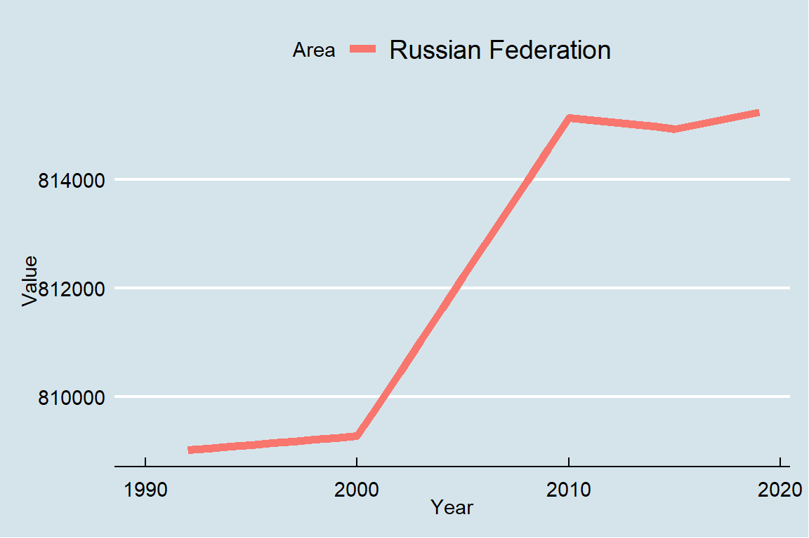

Chapter 3 Data transformation
3.1 Extraction
The datasets that we have downloaded from their respective sites have a lot of columns, many of which are not needed for this project.
## ï..Domain.Code
## Domain
## Area.Code
## Area
## Element.Code
## Element
## Item.Code
## Item
## Year.Code
## Year
## Unit
## Value
## Flag
## Flag.DescriptionThe columns for the Forest Land dataset look like this:
| ï..Domain.Code | Domain | Area.Code | Area | Element.Code | Element | Item.Code |
| chr | chr | int | chr | int | chr | int |
| Item | Year.Code | Year | Unit | Value | Flag | Flag.Description |
| chr | int | int | chr | num | chr | chr |
3.2 Transformation
On randomly plotting a scatter plot of forest area for the top countries by area. That is
- Russia
- Canada
- China
- US
- Brazil
- Australia
- India
- Argentina
- Kazakhstan
- Algeria
On plotting the above 10 plots we get

The above graphs due to their large differences are difficult to infer hence we plot these individually.
The Russian Federation came into existence in 1992 after the dissolution of the Soviet Union, hence the first few rows have no data. This will also be kept in mind during the data cleaning process. On observing the scatter plot we can see that Russia has the best afforestation rate. It is also one of the highest forested countries.

Canada has shown a significant decrease in the forest land in a very linear fashion.
Similar to Russia, China has also shown a healthy reforestation rate.
From 1990-2000 the United States of America shows a steady increase in the total forest area. Post 2000 to 2015 there is a huge rise. Following which the rate stabilizes.

From 1990-2010 Brazil shows a steep deforestation rate which continues further till 2020.
Up-to 2010 Australia was a global deforestation center. Post 2010 Australia planted huge amounts of trees included on land cleared for mining. Thus Australia shows an increase in the total forest land.

Like China, India shows a healthy afforestation rate.

Argentina shows a heavy deforestation rate.
Kazakhstan shows a trend similar to Australia where in there is a reverse trend post 2010. Kazakhstan initiated artificial forestation from 2010.
Up-to 2000 Algeria had an alarming rate of loss of forest land. Post 2000 Algeria shows an increase in the total forest land. This happened due to the launch of National Reforestation Plan in 2000.

3.3 Loading (Cleaning)
Since the json object in a D3 map requires Country ID in ISO-Alpha 3 scale. We shall load these values into our original data.
Also in order to make sense of our data we shall add historical contexts to each operation that we perform and every anomaly that we obtain.
These steps will be discussed in further chapters.
3.3.1 Loading Columns
For the forest area data set we only need the country, year and value. Thus we only keep these Columns and discard the rest. We also renamed Area to Country which was not making any sense in the original data.
3.3.2 Alpha-3 ISO Coding
For plotting on map, D3 matches the country’s ISO-3 code instead of matching the label or country name. Hence we shall add another column ID by merging the data using wikipedia’s list. (https://gist.github.com/radcliff/f09c0f88344a7fcef373)